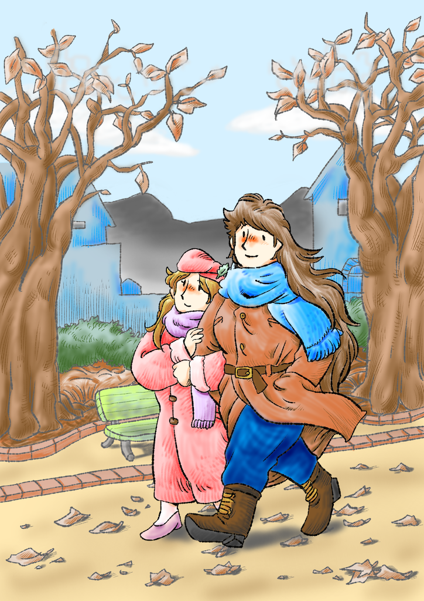

Biography
Please call me Yamako (やまこ). I love cat, coffee, motorcycle, and drawing Japanese Yuri or cute images.

Languages
- Japanese (native)
- English (using machine translation)
Portfolio
- Heartwarming yuri comics: Nakayosi Onee-sans (なかよし おねえさんたち)
- xfolio Latest
- pixiv Latest
- pixiv English translations 1-5 (by @CarmillaScans)
- ArtStation yamako_love_cat
- LINE Sticker Nakayosi Onee-sans
- Books
- Kindle Yamako (やまこ) t
- Movies
- Youtube Yamako-ya (やまこ屋)
- Fedimovie Yamako-ya (やまこ屋)
Donation
Thank you for your supports !
- Ko-fi yamako
Social Media
- Mastodon (decentralized social media) @yamako@fedibird.com (language: Japanese)
- Instagram yamako_love_cat
- Threads @yamako_love_cat
- Bluesky @yamako-ya.com
- Twitter @yamako_love_cat (language: Japanese)
Contact
Please contact me via email (ywindish at yamako-ya.com) or DM on Mastodon.